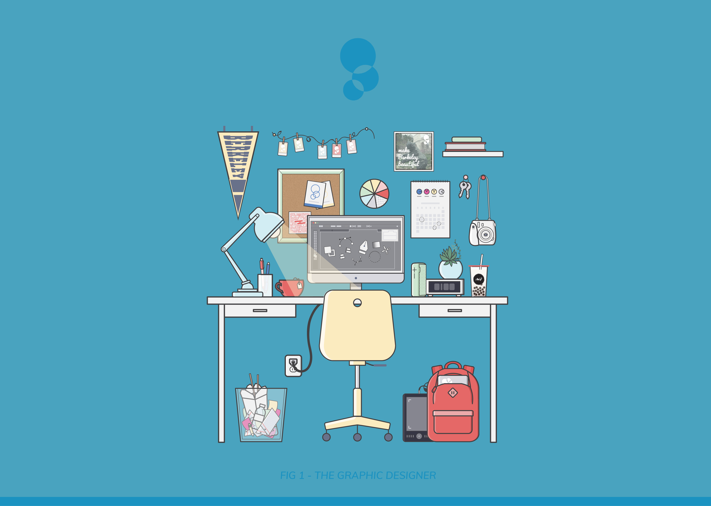

Marketing Tier - Innovative Design
Innovative Design is Berkeley's premier student-run creative agency that does graphic design work, photography, web development, and more for a wide array of both campus organizations and off-campus clientele. InnoD makes Berkeley beuatiful, and Marketing Tier makes InnoD beautiful! I've been on Marekting Tier for the past two semesters, and have helped ideate, develop, and execute many marketing campaigns for InnoD's recruitment, campus events, and internal events. Below are some of the assets that I have made for InnoD over the past year.
